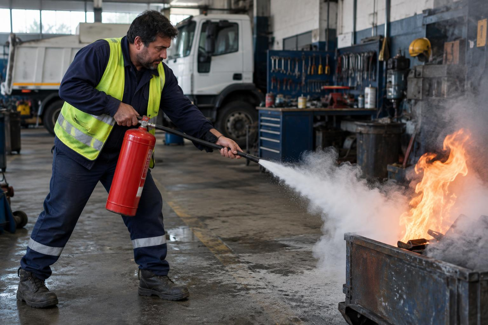

360° · InteractivoCorralón Municipal de Gobernador Virasoro. Viví la emergencia en 360° y practicá con el extintor en realidad aumentada.
Seguí los pasos numerados dentro de la escena real. Activá 📱 Mover con el celular para mirar girando el teléfono.
Panoramas 360° reales: Poly Haven (CC0) · Fotografías ilustrativas generadas con IA
Tocá cada letra para ver el paso. Primero asegurate de tener una salida detrás tuyo y de que el fuego sea incipiente.
Quitá el precinto y tirá del pasador de seguridad. Sostén el extintor en posición vertical.
Dirigí la manguera o boquilla hacia la BASE del fuego, no a las llamas. Paráte a unos 2-3 metros.
Apretá el gatillo de forma firme y sostenida para liberar el agente extintor.
Mové la boquilla de lado a lado barriendo la base del fuego hasta apagarlo. Retirate sin dar la espalda.
Si el fuego es más grande que un tacho, si hay mucho humo, si no tenés salida detrás o si el extintor se vacía sin controlarlo: evacuá de inmediato y dejá que actúen los bomberos.
Mientras el municipio no designe formalmente la brigada, el responsable de turno coordina y el resto evacúa. La designación de brigada y los simulacros son parte del plan de emergencia a implementar.
Coordenadas del predio: lat. -28,062011 ; long. -56,015585. Bomberos a 1,8 km · Hospital a 2,2 km.